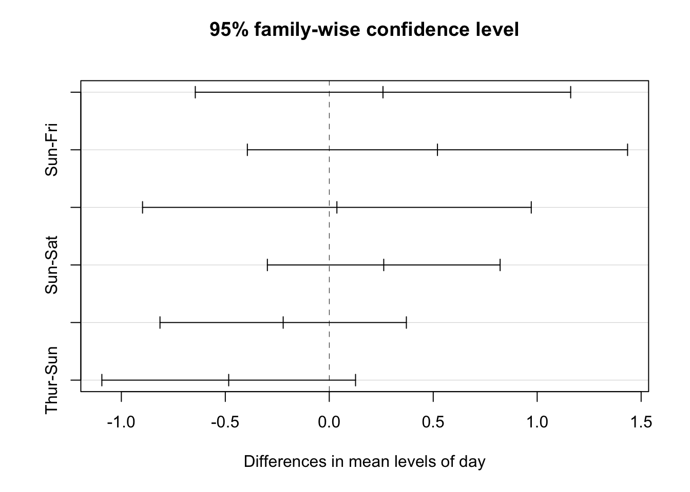

7.9 分散分析
ここまでの内容では、２グループ間の平均の差に関する分析を捉えた。しかしながら、三つ以上のグループ間の平均の差に関心があることもある。例えば、異なる地域における売上高の差を比較したい場合が挙げられる。このような目的を持つ場合によく用いられるのが分散分析（Analysis of Variance; ANOVA）である。本節では、ANOVAの実行方法を中心に説明を行う。なお、ANOVAに関するより詳細な説明は別添の補足資料を参照してほしい。 ANOVAの構造については、要因と水準という二つの要素から説明が行われる。要因とは、観測値に影響を与えていると考えうるカテゴリ変数のことを指し、水準とは、要因を構成するいくつかの条件やグループを指す。例えばある小売企業における各店舗の一定期間内の売上高が出店エリア特性によって差があるのかという問いに関心があるとする。その際各店舗を、都市エリア、郊外エリア、農村エリアという三つのグループに分類し、それぞれのグループにおける標本平均を求めれば、エリアごとの差を分析できるだろう。この場合、「地域」が売上高に影響を与えうる要因であり、「都市、郊外、農村」という三つのグループが水準だと言える。
分析において取り上げる要因が一つである分散分析を一元配置分散分析と呼ぶ。二元配置分散分析については本資料では扱わないため、補足資料を参照してほしい。なお、分散分析をRで実行することは難しくない。ここでは、reshape2というパッケージに内包されてる tipping データを用いてANOVAを実行するため、以下のようにreshape2パッケージをインストールして欲しい。
パッケージをインストールしたら、以下のようにreshape2を起動し、今回使用する tips データを確認する。本データに含まれている変数は以下の通りである。
- total_bill: 支払料金（ドル）
- tip: チップ額（ドル）
- sex: 支払い者の性別
- smoker: グループ内に喫煙者がいるか
- day: 曜日
- time: 時間帯
- size: 人数
## 'data.frame': 244 obs. of 7 variables:
## $ total_bill: num 17 10.3 21 23.7 24.6 ...
## $ tip : num 1.01 1.66 3.5 3.31 3.61 4.71 2 3.12 1.96 3.23 ...
## $ sex : Factor w/ 2 levels "Female","Male": 1 2 2 2 1 2 2 2 2 2 ...
## $ smoker : Factor w/ 2 levels "No","Yes": 1 1 1 1 1 1 1 1 1 1 ...
## $ day : Factor w/ 4 levels "Fri","Sat","Sun",..: 3 3 3 3 3 3 3 3 3 3 ...
## $ time : Factor w/ 2 levels "Dinner","Lunch": 1 1 1 1 1 1 1 1 1 1 ...
## $ size : int 2 3 3 2 4 4 2 4 2 2 ...ここでは、以下の通りチップ額が曜日によって異なるか否かを分析する。ANOVAの実行においてはaov()関数によって分析するモデルとデータを指定し、anova() によって分析結果を出力する（summary() を用いることも可能である）。なお、上記のデータサマリーより、day という要因には四水準 (levels) 含まれていることがうかがえる。
## Analysis of Variance Table
##
## Response: tip
## Df Sum Sq Mean Sq F value Pr(>F)
## day 3 9.53 3.1753 1.6724 0.1736
## Residuals 240 455.69 1.8987分析結果における Sum Sq は、水準間変動和（i.e.,平方和）と呼ばれ、特定要因の水準間によって説明される観測値の変動を表している。 Mean Sq は平均平方と呼ばれ、Sum SqをDF(自由度)で割ったものである。F value は F値という検定統計量の実現値であり、Pr(>F) は本検定の p値を表している。また、Residuals の行で示されているのは、残差平方和と呼ばれ、郡内変動、つまり同グループ（水準）内での値のばらつきの程度を表している。
分析の結果、チップ額について曜日による統計的に有意な差は確認されなかった。それでは、ANOVAでは具体的にどのような帰無仮説を用いた検定を行っているのだろうか？結論を先に述べると、「すべての水準間で平均値は同じ」という帰無仮説を検定しており、仮に帰無仮説が棄却された場合、「少なくとも一つの水準では値が異なる」という対立仮説を指示する。そのため、ANOVAにおける帰無仮説の棄却は、少なくとも1つの群は全体と異なる平均値を持っているという結論につながる。そのため、ANOVAの検定結果だけでは具体的にどの水準間に差があるのかはわからない。そこで、ANOVAを用いた研究では事後分析として、多重比較と呼ばれる分析を行うことが多い。しかし、この多重比較には統計的な問題が伴うと言われている（詳細は補足資料参照）。その問題に対応した手法として広く用いられているのが、Tukeyのpair-wise 比較である。Rではこの分析を、TukeyHSD() という関数で実行できる。具体的には、aov() でストアしたANOVAの分析結果を用いて以下のように実施する。また、plot()を用いて、pair-wise比較の結果を95%信頼区間とともに図示化することもできる。
## Tukey multiple comparisons of means
## 95% family-wise confidence level
##
## Fit: aov(formula = tip ~ day, data = tips)
##
## $day
## diff lwr upr p adj
## Sat-Fri 0.25836661 -0.6443694 1.1611026 0.8806455
## Sun-Fri 0.52039474 -0.3939763 1.4347658 0.4558054
## Thur-Fri 0.03671477 -0.8980753 0.9715049 0.9996235
## Sun-Sat 0.26202813 -0.2976929 0.8217492 0.6203822
## Thur-Sat -0.22165184 -0.8141430 0.3708394 0.7678581
## Thur-Sun -0.48367997 -1.0937520 0.1263921 0.1724212
分析結果における diff 列は平均値の差を表している。 lwer と upr は信頼区間の下限と上限を表しており、一番右の列はp値を示している。分析の結果、P-valueが10%水準よりも低い結果がないため、どのペアに関する検定でも有意な差は確認できなかった。したがって、分析結果は必ずしもチップ額が曜日によって変化するとは言えないことを示した。この結果は、アメリカにおけるチップ額が会計額に対する割合や提供されたサービス品質によって決まるという慣習から考えると妥当な結果である。しかしながら、前節で注意した通り、このような統計的に非有意な結果をもって「曜日はチップ額に影響を与えない」と結論づけるのは不適切である。
なお、今回の分析においてはANOVAもTukeyのpair-wise比較も有意な結論を得ることができなかったという点で、両者の結果に一貫性があった。しかしながら、ANOVAでは有意だが、Tukeyの分析ではどの組み合わせも有意ではないという一見整合でない結果を得ることもある。その場合には、慣習としてTukeyの多重比較結果を優先して解釈を提示することが多い。しかしながら、研究者が自身の実施した検定の「意味」を理解し、解釈や議論を提示することも重要である。例えば、ANOVAとTukeyでは用いている帰無仮説が異なるため、異なる比較対象を用いた検定を実施している。そのため、自身が実行した分析がどのような帰無仮説を採用しており、何と何の比較を行っているのかを正確に把握し、実施した検定の意味に適した解釈や議論を展開する事が重要になる。
本章では、基礎的な統計学の復習として、主に区間推定と統計的仮説検定について説明した。区間推定では、主に信頼区間の計算に着目し、信頼区間の意味についてきちんと理解、解釈することの重要性を強調した。また、統計的仮説検定では、母平均の検定を起点とし統計的検定の基礎的な構造と考え方について説明した。検定においては、母集団の統計的特徴に関する予測である帰無仮説と対立仮説を設計することが重要である。また、グループ間の差異に着目した検定を行う場合には、関心のある未知パラメータについての差や比に着目し検定統計量を作成する事が多いが、基本的な統計的検定の考え方と手順は変わらないという点についても説明した。